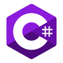

Unity - среда для разработки игр, использующая язык программирования C#. Приложения, созданные на данном движке работают на более 25 платформах - Windows, Android, macOS, Linux и т.д. Сам редактор среды имеет Drag&Drop интерфейс, позволяющий отлаживать код прямо в движке. Для написания скриптов к играм и приложениям используется C#. Каждый проект в Unity, да и в других движках, делится на сцены - отдельные файлы со своими мирами, объектами и настройками. Физика в движке представлена в виде движков PhysX для 3D игр, и Box2D для 2D. Однако, помимо этих движков, Unity имеет тип физики Ragdoll. На данном движке написаны многие знаменитые игры, например Cuphead, Beholder, Firewatch, Ori and the Blind Forest.
Unreal Engine - движок, разрабатываемый компанией Epic Games. Самым первым проектом на этом движке был шутер Unreal, выпущенный в 1998 году. Хоть изначально движок был предназначен для шутеров, в будущем его начали применять и в других жанрах по типу стелс-игр и MMORPG. Написанный на С++ и использующий его для скриптов игр, движок позволяет заниматься разработкой на огромном количестве платформ, начиная от Windows и Android, заканчивая консолями PlayStation, Xbox, GameCube. На Unreal Engine созданы такие известные игры, как Dishonored, Outlast, Life is Strange, Fortnite, PUBG; серии по типу Bioshock, Mass Effect, Borderlands и Batman: Arkham.
Godot - совсем молодой, по сравнению с Unity и Unreal Engine, кроссплатформенный игровой движок. Основная его задача заключается в том, чтобы быть интегрированной и самодостаточной средой для гейм-дева. В отличии от других движков, он довольно прост для изучения. Для создания игр нету большой необходимости изучать С++ и С#, так необходимые для Unity и UE. В частности это происходит из-за того, что Godot имеет свой язык GDScript, похожий синтаксисом на Python. При том, что необходимости в С++ и C# нету, на них также можно создавать игры в данном движке. Скорее всего, потому что движок выпущен относительно недавно, на нем нету громких и популярных проектов. Но при этом на нем есть неплохие игры в лице City Game Studio и 1000 Days to escape.
C++ - статически типизированный язык программирования, использующий компилятор для выполнения кода. Язык имеет довольно богатую базовую библиотеку, включающая в себя различные алгоритмы, регулярные выражения, поддержку многопоточности. В нем сочетаются как особенности высокоуровневных языков, так и низкоуровневых. Применение С++ довольно обширное: на нем можно писать практически что угодно, начиная от разработки игр и заканчивая написанием своих собственных ОС. Развитие языка не было упорядоченно, оно шло исходя из встававших перед программистами задач. Помимо того, что язык является мультипарадигмальным, содержащий в себе такие парадигмы как ООП, процедурное и обобщенное программирование, в нем также есть и полиморфизм, делящийся на динамический и параметрический. Несмотря на то, что синтаксис С++ очень похож на его предшественника в лице С, сам язык он не включает. В частности из-за этого большая часть кода, например на С++, может оказаться неверным для С, и наоборот.

C# - ООП язык общего назначения. Изначально разрабатывался как инстумент разработки на .NET Framework и .NET Core. Название C# пошло из музыкальной нотации, где букве С соответствует нота До, а решетке Диез - повышение звука соответствующего ноте. Сам язык относится к семейству С-подобных, поэтому его синтаксис довольно сильно близок к Java и C++. Он имеет статическую типизиацию, поддерживает полиморфизм, и множество других, обычных для ЯП объектов и операторов. Язык активно применяется при разработке игр. На C# были написаны такие игры, как Cities: Skylines, Hearthstone, Cuphead.